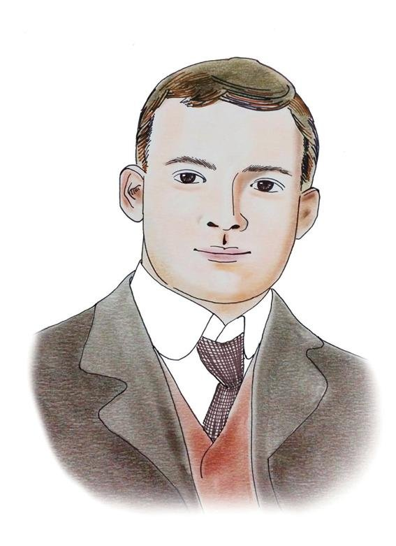

Ernest Thomas Bethell(🇬🇧):
[1872. 11. 3 ~ 1909. 5.1]
Achievements
Founded The Daehan Maeil Sinbo:
- Established on July 18, 1904, with a sister edition in English called The Korea Daily News.
- Served as a platform for reporting on Korea’s situation and supporting the anti-Japanese movement.
- Collaborated with Korean Independence Activists:
- Worked with Yang Ki-tak, Park Eun-sik, Shin Chae-ho, and Choi Ik.
- Provided a voice for Korean independence fighters and intellectuals.
- Utilized extraterritorial rights as a British citizen to dodge Japanese censorship.
- Published three versions of his newspapers: Korean and Chinese characters, English, and a pure Hangeul version.
- Praised Jang Ji-yeon’s editorial “I Wail Bitterly Today” and translated it into English for wider dissemination.
- Publicized Korea’s plight to Western audiences through his newspapers and The Japan Chronicle.
- Achieved a circulation of 10,000 copies by September 1907, surpassing other newspapers of the time.
Published without Japanese Censorship:
Supported Anti-Japanese Sentiments:
Maintained High Circulation:
Received the Presidential Medal of Merit for National Foundation (Grade 2) from the government.
Verdicts
- In 1907, Bethell was tried by the British consul-general in Seoul for breaching public order through ten articles published in his newspapers. He was sentenced to six months of probation.
- In 1908, Japanese authorities continued to pressure for his expulsion from Korea, leading to a second trial involving Korea, Japan, and the U.K. Bethell was sentenced to three weeks in jail, six months of probation, and fined GBP 350. He served three weeks in a Shanghai jail before being released on July 11, 1908.
- Japanese media falsely accused Bethell of embezzling public funds collected by Koreans, but Bethell took the case to the British Supreme Court in Shanghai and won in December 1908.